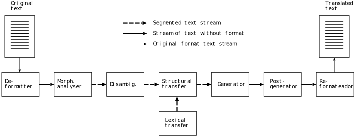

3 Format specification of the data stream between modules
3.1 Introduction
The format of the data that circulate between the engine’s modules has to be specified so that document processing is more effective and transparent. The proposed system design (see The shallow-transfer machine translation engine) imposes the need to use three different data stream types, as shown in Figure 2.
The stream format is text-based to facilitate, among other things, the diagnosis of possible system errors, since it is easy to manipulate the stream in order to reproduce the phenomena that are to be tested, and change it to see the result. Other benefits of using text streams are that it is possible to test independently the output of each module, and that it allows for fast building of prototypes to test the system’s global performance, the validity of linguistic data, etc.

Figure 2: The different data stream types in the machine translation system. See the text for its description.
The data stream types are:
Data stream with format: It is the text in its original format, with no further marks: XML, ANSI text, RTF, HTML, etc. Since it is the original format of the documents, nothing needs to be specified about it except the name of the format.
Data stream without format: It is the text with superblanks, that is, with special characters that encapsulate the format (see Format processing); superblanks are treated by the linguistic modules as blanks between words (with some exceptions). This is the format generated by the de-formatter and used by the re-formatter when generating the final translated document.
Segmented data stream: In this format, apart from superblanks, lexical units that are to be translated are delimited also with special characters. These characters are put by the morphological analyser and deleted by the generator, which delivers the final surface forms.
We describe next the characteristics of the data stream used between the modules of the translator, that is, the second and the third stream types. In general terms, it is a plain text format marked with characters that have a special meaning. This format is intended for the processing in servers that translate large volumes of text.
Some of the formats that the engine can process may contain extensive blocks of
information in binary format —
3.2 Data stream without format
Data stream without format is output by the de-formatter and by the generator, and is used as input by the morphological analyser, the post-generator and the re-formatter.
In the subsection of this section you can find a description of the method to delimit superblanks and extensive superblanks. As an example we will use the HTML document in Figure 4.
<html>
<head>
<title>Title</title>
</head>
<body>
<p>Divided
sentence</p>
</body>
</html>
Superblanks. Blocks that contain segments of format information included in the documents, when these are short.
Extensive superblanks. Marks that are used to specify external documents that include segments of format information for the document being processed, when these segments are long.
Text. The document text that can be translated.
Artificial sentence endings. When the format in the document suggests a sentence separation that is not signalled by any punctuation mark (for instance, titles with no full stop at the end, or the content of cells in a table), the format processing must have a mechanism (invisible for the user) that enables the marking of these sentence endings.
Special characters protection (for non-XML stream). Characters that must be protected to avoid conflict with the ones used in the data stream format.
3.2.1 Stream format
This format is based on the one used in the machine translation systems interNOSTRUM \cite{canals01b,garridoalenda01p,garrido99j} and Traductor Universia \cite{garrido03p, gilabert03j}.
In this stream type, the characters [ and ] are used to indicate superblanks, as shown in the following example:
[superblank content] |
In the case of extensive superblanks, the file name is specified using the at sign @:
[@file name] |
The text is outside the superblank marks.
Artificial sentence endings are expressed by a full stop and an empty superblank right after it.
.[] |
The following table shows the protected characters:
Name | Character | Protected form | Meaning |
At | @ | \@ | External superblank |
Slash | / | \/ | Divider of meaning |
Backslash | \ | \\ | Protection character |
Caret | ^ | \^ | Beginning of LF |
Opening square bracket | [ | \[ | Beginning of blank |
Closing square bracket | ] | \] | End of blank |
Dollar | $ | \$ | End of LF |
Greater than | > | \> | Begin. of morph. symbol |
Less than | < | \< | End of moprh. symbol |
Figure 4 shows the document in Figure 3 after encapsulation.
[<html>
<head>
<title>]Title.[][</title>
</head>
<body>
<p>]Divided[
]sentence.[][</p>
</body>
<html>]
Figure 4: The document in @Figure-ref fg:docorig with format encapsulated using square brackets
3.3 Segmented data stream
Segmented data stream is the stream that circulates between the modules that handle linguistic information in the translation engine. In this stream, words are delimited and labelled. There are two types of segmented stream:
\begin{itemize} \item \textit{Ambiguous segmented stream}. Its main characteristic is that words have a surface form and potentially more than one lexical form (lexical multiform). This stream type is the format in which the morphological analyser provides the input data for the part-of-speech tagger (see diagram \ref{eq:formaanalizada} in page ~\pageref{formaanalizada} for a detailed description of ambiguous segmented stream).
\item \textit{Unambiguous segmented stream}. It has only one lexical form for each word and it does not include the surface form. This is the format in which data circulate from the part-of-speech tagger to the transfer module, and from this module to the generator (see diagram \ref{eq:formaanalizada2} in page~\pageref{formaanalizada2} for a detailed description of the format of unambiguous segmented stream). \end{itemize}
Furthermore, besides the information already marked in the data stream without format, the new stream has to enable marking of the following information:
\begin{itemize} \item \textit{Lexical units}. A lexical unit is made of a surface form (in the case of ambiguous segmented stream) plus one or more lexical forms (the different possible analyses of the SF) with their grammatical symbols. \item \textit{Surface forms (ambiguous segmented stream)}. The word as it appears in the original text. \item \textit{Lexical forms}. The lemma of the word and its grammatical symbols. \item \textit{Grammatical symbols}. They describe the morphological and grammatical attributes of a surface form. \end{itemize}
% \subsection{XML format}
% Las \textit{palabras} se etiquetan de la forma que se muestra a % continuación:
% \begin{small} % \begin{alltt} % <\textbf{w}>\textit{información de la palabra}</\textbf{w}> % \end{alltt} % \end{small}
% Para el caso del \textit{flujo de datos segmentado ambiguo}, la % \textit{forma superficial} se indica en el interior de un elemento % \texttt{<\textbf{w}>} mediante el contenido de un único elemento %\texttt{<\textbf{sf}>}. A continuación, se sitúan la forma o %\textit{formas léxicas} que sean necesarias:
% \begin{small} % \begin{alltt} % <\textbf{w}> % <\textbf{sf}>\textit{forma superficial}</\textbf{sf}> % <\textbf{lf}>\textit{forma léxica 1}</\textbf{lf}> % <\textbf{lf}>\textit{forma léxica 2 (opcional)}</\textbf{lf}> % ... % </\textbf{w}> % \end{alltt} % \end{small}
% Para el caso del flujo no ambiguo, sólo se especifica una única forma léxica.
% \begin{small} % \begin{alltt} % <\textbf{w}> % <\textbf{lf}>\textit{forma léxica}</\textbf{lf}> % </\textbf{w}> % \end{alltt} % \end{small}
% %% \pagebreak
% La DTD de este flujo de datos para textos \textit{sin desambiguar} es la % que se muestra en la figura~\ref{fg:ambdtd} a continuación.
% \begin{figure}[here] % \begin{small} % \begin{alltt} % <!\textsl{ELEMENT} \textbf{document} (b|w|\textsl{#PCDATA})*> % <!– atención, el #PCDATA anterior sigue siendo necesario para los % carácteres no etiquetados y que no forman parte del formato –> % <!\textsl{ELEMENT} \textbf{b} (\textsl{#PCDATA}?)> % <!\textsl{ATTLIST} b filename \textsl{CDATA} \textsl{#IMPLIED}> % <!\textsl{ELEMENT} \textbf{w} (sf,lf+)> % <!\textsl{ELEMENT} \textbf{sf} (\textsl{#PCDATA})> % <!\textsl{ELEMENT} \textbf{lf} (\textsl{#PCDATA}|s)+> % <!\textsl{ELEMENT} \textbf{s} \textsl{EMPTY}> % <!\textsl{ATTLIST} s n \textsl{IDREF #REQUIRED}> % \end{alltt} % \end{small} % \caption{DTD para textos no desambiguados con formato XML} % \label{fg:ambdtd} % \end{figure}
% Para los ya \textit{ desambiguados}, los textos deben cumplir la DTD de la figura~\ref{fg:desambdtd}.
% \begin{alltt} % <!\textsl{ELEMENT} \textbf{document} (b|w|\textsl{#PCDATA})*> % <!– atención, el #PCDATA anterior sigue siendo necesario para los % carácteres no etiquetados y que no forman parte del formato –> % <!\textsl{ELEMENT} \textbf{b} (\textsl{#PCDATA}?)> % <!\textsl{ATTLIST} b filename \textsl{CDATA} \textsl{#IMPLIED}> % <!\textsl{ELEMENT} \textbf{w} (lf)> % <!\textsl{ELEMENT} \textbf{lf} (\textsl{#PCDATA}|s)+> % <!\textsl{ELEMENT} \textbf{s} \textsl{EMPTY}> % <!\textsl{ATTLIST} s n \textsl{IDREF #REQUIRED}> % \end{alltt} % \end{small} % \caption{DTD para textos desambiguados con formato XML} % \label{fg:desambdtd} % \end{figure}
% La figura~\ref{fg:docorigXML2} muestra un ejemplo de segmentación del flujo % que incluye la forma de encapsular el formato y la información léxica. Este % ejemplo es para el caso de flujo segmentado ambiguo y corresponde al texto % HTML original de la figura~\ref{fg:docorig}.
% \begin{figure}[htbp] % \begin{small} % \begin{alltt} % <?\textbf{xml} \textsl{version}="1.0" \textsl{encoding}="iso-8859-15"?> % <document> % <\textbf{b}><![CDATA[<html> % <head> % <title>]]></\textbf{b}> % <\textbf{w}> % <\textbf{sf}>Título<\textbf{sf}> % <\textbf{lf}>Título<\textbf{s} \textsl{n}="n"/><\textbf{s} \textsl{n}="m"/><\textbf{s} \textsl{n}="sg"/></\textbf{lf}> % </\textbf{w}> % <\textbf{w}> % <\textbf{sf}>.</\textbf{sf}> % <\textbf{lf}>.<s n="sent"/></\textbf{lf}> % </\textbf{w}><\textbf{b}/> % <\textbf{b}><![CDATA[</title> % </head> % <body> % <p>]]></\textbf{b}> % <\textbf{w}> % <\textbf{sf}>Frase</\textbf{sf}> % <\textbf{lf}>Frase<s n="n"/><s n="f"/><s n="sg"/></\textbf{lf}> % </\textbf{w}> % <\textbf{b}><![CDATA[ % ]]></\textbf{b}> % <\textbf{w}> % <\textbf{sf}>dividida</\textbf{sf}> % <\textbf{lf}>dividir<s n="vblex"/><s n="pp"/><s n="f"/><s n="sg"/></\textbf{lf}> % </\textbf{w}> % <\textbf{w}> % <\textbf{sf}>.</\textbf{sf}> % <\textbf{lf}>.<s n="sent"/></\textbf{lf}> % </\textbf{w}><\textbf{b}/> % <\textbf{b}><![CDATA[ % </body> % <html>]]></\textbf{b}> % </document> % \end{alltt} % \end{small} % \caption{Ejemplo de flujo segmentado con el formato encapsulado en XML, % correspondiente al documento HTML de la figura~\ref{fg:docorig}.} % \label{fg:docorigXML2} % \end{figure} %\subsection{Formato no XML} %\subsubsection{Formato de flujo} \label{se:noxml2} The symbols ’\verb!^!’ for word beginning and ’\verb!$!’ for word end are used to delimit \textit{words}, as shown in this example:
\begin{small} \begin{alltt} \verb!^!\textit{word}\verb!$! \end{alltt} \end{small}
To separate the \textit{surface form} and the following \textit{lexical forms}, the symbol \texttt{/} is used. This separator only has sense in the ambiguous segmented stream, since in the unambiguous stream there is only the lexical form. It is used as follows:
\begin{small} \begin{alltt} \verb!^!\textit{surface form}/\textit{lexical form 1}/...\verb!$! \end{alltt} \end{small}
Lexical forms can include symbols (generally located at the end), as shown in the example of Figure \ref{fg:docorigtext2}.
\begin{figure} \begin{small} \begin{alltt} [<html> <head> <title>]^Title/Title<n><m><sg>\$^./.<sent>\$[][</title> </head> <body> <p>]^Divided/Divide<vblex><pp>/Divided<vblex><past>\$[ ]^sentence/sentence<n><sg>/sentence<vblex><inf>\$^./.\\<sent>\$[][</p> </body> <html>] \end{alltt} \end{small} \caption{Example of segmented stream with format encapsulated in non-XML format, corresponding to the HTML document in Figure ~\ref{fg:docorig}.} \label{fg:docorigtext2} \end{figure}